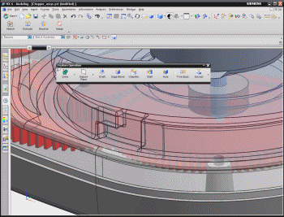
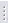

工具条的移动、停靠和取消停靠

要移动工具条，拖动该工具条的移动手柄  ，到工具条区域的新位置中。
，到工具条区域的新位置中。
取消停靠工具条
拖动已停靠的工具条的移动手柄到图形窗口中，工具条将变为浮动的，您可以将工具条移动到图形窗口中的任意位置，或者拖到桌面上。
停靠工具条
拖动取消停靠的工具条的标题栏，到工具条区域中，或者停靠在图形窗口底部，亦或停靠在与资源条相反的一侧。
工具提示
停靠的工具条的名称显示在工具提示中，工具提示在您把光标停在工具条的拖动手柄上时出现。
工具条的名称显示在光标旁边。

|
注释 |
使用定制对话框的选项选项卡来关闭工具提示。 |